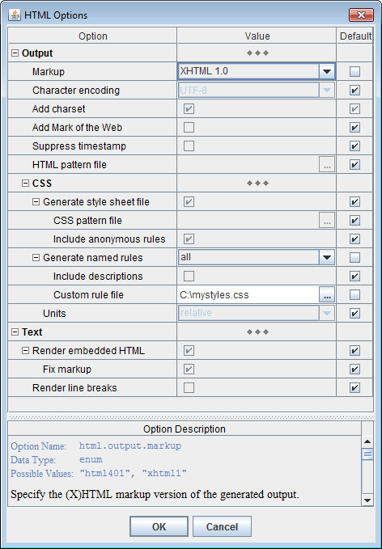

java
[java_options]
<class_path>
<generator_class>
[options]
[XML files]
where all arguments are explained in this table:
| Command/Arg | Explanation | |
|---|---|---|
java
|
A system command that starts JVM (Java Virtual Machine).
On Windows, that command may be as simple as
(Just do not forget to enclose it in double quotes, when the pathname contains spaces!) |
|
[java_options]
|
The JVM options.
When you process large quantities of data (e.g. big XML files or lots of them), use -Xmx option to set the maximum heap size allocated by JVM. Otherwise, the generator may slow down and even run out of memory! For example, setting -Xmx512m will allocate 512 Mb for the heap, which is OK for most purposes (e.g. to run XSDDoc) on 32-bit Java.
|
|
<class_path>
|
Specify DocFlex/XML class path, which should look as follows (Windows platform):
where
Notes:
|
|
<generator_class>
|
The qualified name of the DocFlex/XML generator main Java class:
com.docflex.xml.Generator
|
|
[options]
|
Generator command-line options, which provide settings
to control both the generator and the template application.
|
|
[XML files]
|
One or many input XML files to process.
They should be specified with separate command-line arguments, which may be either:
|
|
-config -d -defaultcatalog -docflexconfig -errlog -f |
-format -launchviewer -license -m -nodialog -o |
-p -quiet -template -xmlcatalog -xmltype |
Please note that options not specified directly on the command line, first, will be searched in the generator.config file and only when not found their default values will be used.
Here are the option details grouped by category:
The template file may be specified both with absolute or relative pathname. The relative pathname will be treated against the default template directory (specified in docflex.config file).
-template C:\docflex-xml\samples\sales\sales.tpl
-template PlainDoc.tpl
or
-p:<parameter> <value>"true" and
"false" strings
(for example: -p:includeImages=true).
-p:title="My Docs").
or
-o:<option> <value>"true"
and "false" strings (for example:
-o:rtf.storeGraphicsInRTF=false).
The output files are distributed in the following way:
This makes the whole documentation to look as to consist of only two file entities, which may be easier to distribute yet during the generation, especially when different types of documentation are produced from the same project.
-template PlainDoc.tpl -format RTF -d c:\outc:\out\PlainDoc.rtf with the associated files
subdirectory c:\out\XMLDoc_files\ (if any)
-template SalesReport.tpl -format HTML -d c:\out -f MySalesc:\out\MySales.html with the associated files
subdirectory c:\out\MySales_files\ (if any)
-template XMLDocFrames.tpl -format HTML -d c:\outc:\out\
with the main file index.html
-template XMLDocFrames.tpl -format HTML -d c:\out -f MyXMLc:\out\MyXML.html
and all other files located in the directory c:\out\MyXML_files\
Typically, it should be used to specify a pure name associated with the generated report/documentation (for example, 'MySales'). However, the pathname may also be used. In that case, it is interpreted against the initial destination directory (specified with the -d option) and may override it. If the pathname is the absolute one, the -d option is effectively ignored.
Precisely, this command is specified in
docflex.config
file found near docflex-xml.jar file in the lib directory.
-launchviewer-launchviewer=false'urn:docflex-com:xml:defaultcatalog', which denotes the
default XML catalog
All XML catalogs will be loaded before the data-source XML files and further used to resolve (or redirect) both the initially specified XML file URIs and any external identifiers or URI references found the actual XML files being processed.
For more details, please see: Installation / Configuration Files | XML catalogs.
Notes:
-xmlcatalog options are specified on the command line,
they will override the XML catalog settings stored in the
generator.config.
If you need to ensure that no XML catalogs
(of those left from the previous GUI settings) will be used,
just specify this option with the empty string argument: -xmlcatalog ""
If this option specified, the generation will be started immediately according to the setting provided on the command line and in the generator.config (see -config option). Then, the generator exits.
By default, when an unexpected error/exception occurs during the generation and no GUI is enabled, all details about the error are printed to the standard console.
Using this option, you can assign a separate error log file, into which the detailed ERROR REPORT is dumped each time an error happens. Only brief messages will get on the console in that case. (See also Error Reporting for more details.)
The error log file should be specified as an absolute or relative file pathname.
When the pathname points to a directory, it will be extended with the default
“docflex_error.log” name (for example, setting "-errlog ."
will be interpreted as 'docflex_error.log' file located in the current directory).
If the error log file does not exist, it is created in the event of error. Otherwise, the ERROR REPORT is appended to the existing file. In the case of any I/O error related to the error log file itself, everything will be printed to the console (along with additional the log file error message).
If this option is not provided, the location of the generator config file will be searched in
docflex.config
which, by default, points to the file: {docflex-xml}/config/generator.config
'docflex.config' which is searched in the
directory where the DocFlex Java library file 'docflex-xml.jar' is
located. If not found, docflex.config is created automatically with default settings.
The option value may include multiple file pathnames, which should be separated
with the OS-specific path-separator character
(e.g. ';' under MS Windows or ':' under Linux).
Alternatively, you can specify different license files with any number of -license options
on the command line.
The license files directly specified on the command line with
the -license options will be loaded (and used) before any other license files:
-license option,
that one will be used.
See also Multiple Licenses.
or
-m:<macro> <value>Notes:
-m:LIBPATH="C:\Program Files\...").
The option value may include multiple file pathnames, which should be separated
with the OS-specific path-separator character
(e.g. ';' under MS Windows or ':' under Linux).
Alternatively, you can specify different config files with any number of -xmltype options
on the command line.
All XML Type Configuration Files
specified with the -xmltype options are loaded in addition to
those assigned statically in the
docflex.config.
However, when an XML Type
happens to be defined simultaneously in several files,
the definition contained in a file directly specified on the command line will be used the first.
For more details, please see: Installation / Configuration Files | XML Catalogs | Default XML Catalog
To shorten/simplify list of arguments on the command line, you can specify one or more files containing all those arguments you need. Any such file should contain space- or newline-separated arguments or options written the same way as on the command line.
When DocFlex parses the command line arguments and encounters an argument beginning with the character '@', it treats the characters following it as a file name and expands the contents of that file into the argument list.
Example:
set classpath=lib\xml-apis.jar;lib\xercesImpl.jar;lib\resolver.jar;lib\docflex-xml.jar
java -cp %classpath% com.docflex.xml.Generator @argfile
argfile may contain the following lines:
-template templates/XMLDoc/PlainDoc.tpl
-p:title="Sales XML Files"
-format RTF
-nodialog
-launchviewer
samples/sales/sales.xsd
samples/sales/sales.xml
When the generator starts without -nodialog option set on the command line, by default, it invokes the Generator Dialog, as shown on the following screenshot:
In this dialog, you can specify most of the settings needed for the generator as well as to start generation and track its progress.
The Generator Dialog can also be invoked from the Template Designer. In that case, the dialog fields are initialized from the default generator.config and the “Template” field is set to the current template open in the designer.
When the generator is started directly from the Java command line
(e.g. by running generator.bat) and no
-nodialog option specified,
the Generator Dialog is launched automatically.
In that case, the dialog fields are initialized with exactly those settings prepared for the generator
-- that is the generator options specified on the command line plus everything else loaded from
the generator.config
(see also -config option).
The combo-box contains the list of the last used templates which allows you to quickly pick one when needed. When the Generator Dialog is invoked from the Template Designer, the “Template” field is preset to the current designed template.
This field duplicate -template option specified on the generator command line.
The inspector content is constructed dynamically from the parameter definitions contained in the given template. In fact, when you click the “Params” button, the template file is loaded and parsed in order to obtain those definitions. The parameter values are displayed and edited according to their types.
The bottom panel in the inspector dialog displays the description of the selected parameter (which is also obtained from the template). The first line of the description (the highlighted text) shows the internal parameter name. Use this name in the -p option to specify the parameter value on the generator command line.
See also: Multi-valued (List) Parameters | Specifying List Value in Parameter Inspector.
Each file specification must be either:
test1.xml c:\projects\test2.xml "c:\My Projects\test3.xml"
Here, you can add one or more XML Catalog files, which may be both local file pathnames and absolute URLs. The “Include default XML catalog” check-box allows you to add also the default XML catalog.
All specified XML catalogs will be loaded before the data-source XML files and further used to resolve (or redirect) both the initially specified XML file URIs and any external identifiers or URI references found within the XML files being processed.
For more details, please see: Installation / Configuration Files | XML catalogs.
Notes:
If you need to make sure that no XML catalogs will be used (of those left in
generator.config
from the previous GUI settings), just specify -xmlcatalog
option with the empty string argument: -xmlcatalog ""
Similar to the template parameters, the “Options” button near the “Output format” combo-box invokes the Format Option Inspector which is specific for the selected output format.
The bottom panel in the inspector dialog displays the description of the selected option. The first line of the description (the highlighted text) shows the internal option name. This name should be used in the -o option to specify the format option value on the generator command line.
The following screenshots show the option inspectors for each supported output format:

The progress bar tracks the generation progress and shows the name of the output file being currently generated. The “Cancel” button stops the generation at any moment.
Once the generation has finished or cancelled, the Generator Dialog transforms back to the initial state. Then, the new settings can be entered and the generation started again.
When the generation was successful and the “Launch Viewer” check-box selected, the generator will try to launch an external application (e.g. MS Word) to view the produced result. See -launchviewer option for more details about this setting.
In the estimation phase, the generator quickly passes over all the source data and partially interprets the involved templates. During that, it collects the names and location of all documentation files to be created and all possible hypertarget locations within them. It also makes an estimation of the total generation time in order to graduate the progress bar.
During the estimation phase, only the message "Scanning data source, please wait..." is displayed on the generator dialog's progress bar. Please note, the estimation phase may take some time! On a lot of data (plus a slow computer), it may last some minutes. This does not mean, the generator hangs. Please wait!
During the generation phase, all template components are being fully interpreted and the real output generated. The progress bar is alive and shows what's being generated at the particular moment.
List parameters allow you to pass to the template the whole vector of different values associated with the same parameter name. This provides a universal mechanism of implementing the user control over how the set of templates processes a certain type of data (or situations) that may come in unlimited number of variations.
The parameter inspector represents the whole value of a list parameter as a concatenation of all value items (represented as strings) delimited with a separator character. However, there is no need to process that string representation within a template. Rather, it will be parsed automatically by the Generator (as well as the parameter inspector ensures its integrity).
Additionally, the list value can be edited as a multi-line text in a special dialog (invoked by the ellipsis button):
At that, when the allowed value item separators include
newline,
all currently used separators will be replaced with it so as to show each value item
on a different line.
When the editing in this dialog is finished, all newline-separators will be
automatically replaced with another available separator suitable for single-line
representation.
You can see all available value item separator characters in the “Parameter Description” window, when the list parameter is selected:
The separators are specified in the template along with the parameter definition.
';' is a separator,
the following value item:
red;green;blue
can be specified like this:
red\;green\;blue
If a backslash is not consumed by an escape it will be remained in the text as is.
To make sure that a backslash is not part of some escape, you may add another backslash.
A sequence of two backslashes ("\\") is an escape itself, which represents a single backslash.
This is important because backslashes may be used also in a secondary system of escapes
within value items, which is specific to the given parameter.
When the escapes are recognized, the sequence "\n"
is reserved to encode a newline character.
The encoding of newline may be needed, for instance,
when it is used not as a value item separator, but rather within multi-line content
of value items themselves. In that case, the "\n" escape allows flattening
the entire list value into a single line. This may be particularly important
for specifying the list parameter on the command line (see also below).
Some list parameters can be specified to ignore escapes. This may be needed when backslashes must be frequently used within value items. (For example, the parameter will accept a list of Windows file pathnames.)
All possible escapes related to specifying of the value of a list parameter as a whole can be found in the “Parameter Description” window.
For example, suppose you need to pass into a template the list parameter
'gen.doc.element.names' with three value items:
link
target
key
You can do this using a single command line option
(given that ';' is a value item separator):
-p:gen.doc.element.names "link;target;key"
(The quotes are necessary only when the parameter value contains spaces
and must be treated as a single command-line argument.)
Alternatively, you can pass the same list value using multiple -p options, each one for a separate value item. e.g.:
-p:gen.doc.element.names link
-p:gen.doc.element.names target
-p:gen.doc.element.names key
You can even combine the two approaches simultaneously:
-p:gen.doc.element.names link;target
-p:gen.doc.element.names key
Multiple options specifying the same list parameter
can be mixed with other options on command line.
However, the order in which the parameter options follow is important,
because it defines the ordering of the list value items received by the template.
When the Generator Dialog is enabled, any error is reported via the error message dialog, like the one shown on the screenshot:
The error dialog shows brief information about the error. When more details are available, a full ERROR REPORT is created and dumped to the system clipboard. You can easily extract it (e.g. under MS Windows, just run Notepad and press Ctrl+V).
The detailed ERROR REPORT includes:
Each pathname pattern looks similar to a normal file pathname besides that it may contain some wildcard characters with a special interpretation. These are the following:
| Wildcard | Description |
|---|---|
| ? | matches one character in a real file name |
| * | matches zero or more characters |
| ** | when used as the name of a directory, it matches zero or more sub-directories at any depth |
The file pathname patterns may be both absolute and relative ones, may contain spaces, etc. Basically, they should be specified the same as the ordinary file pathnames.
Example Patterns:
| Pattern | Description |
|---|---|
*.xsd
|
matches all XSD files in the current directory |
c:\schemas\*.xsd
|
matches all XSD files in the directory c:\schemas\
|
c:\schemas\**\*.xsd
|
matches all XSD files in the directory c:\schemas\ and all its subdirectories
|
c:\**\schemas\*.xsd
|
matches all XSD files found in any directory with the name 'schema' at any depth
|
../**/*.xsd
|
matches all XSD files found in the parent directory of the current one and all its subdirectories |
*.x??
|
matches all files in the current directory, whose name extension consists of 3 letters starting with 'x'
|
*.x*
|
matches all files in the current directory, whose name extension starts with 'x'
|
Notes:
'\' or '/') independent on the system.
For further details, please see: DocFlex Technology | Documentation | Usage of CSS in generated HTML
DocFlex/XML is able to insert the generic MOTW automatically (see code below). This is controlled by "Add Mark of the Web" option (see HTML Options Inspector).
You may also program inserting MOTW by yourself using a special HTML pattern file. To do this, you should create a separate HTML file with the following content:
Then, specify location of this file in the “HTML pattern file” field within the HTML Options Inspector (or using<!DOCTYPE HTML PUBLIC "-//W3C//DTD HTML 4.0 Transitional//EN"> <!-- saved from url=(0014)about:internet --> <HTML> <HEAD> <!-- docflex-html-head --> </HEAD> <BODY> <!-- docflex-html-body --> </BODY> </HTML>
'-o:html.documentPatternFile' formatting option
on the generator command line).
DocFlex will produce all HTML documents using the specified HTML pattern file with the
lines <!-- docflex-html-head --> and
<!-- docflex-html-body --> replaced with the actual generated output.
For more information about MOTW, please see Microsoft MSDN web-site (they frequently change the page location, so here is a Google query): http://www.google.com/#q=Mark+of+the+Web
When you load the generated RTF in MS Word, to have the fields display the correct values, you will need to update them. To do this, please type: Ctrl+A, then F9.
Here is how you can do that.
You should insert into your Word document an INCLUDETEXT field. Using the MS Word menu, it may be done like this:
Insert | Field... | Categories: Links and References | Field names: Include TextIn the Word document (when “Toggle Field Codes” switched on), the field will look like the following:
{ INCLUDETEXT "C:\\blah\\blah\\XMLDoc.rtf" \* MERGEFORMAT }
Here, the RTF document generated with DocFlex should be found by the path:
C:\blah\blah\XMLDoc.rtf
Make sure you use double slashes in the field's pathname
(as a single slash is used to start a command or an option)!
After that, you can generate with DocFlex the XMLDoc RTF. To prepare the result big document, open it with MS Word. Then, press Ctrl+A (select all) and F9 (to update fields).
That is possible too. However, you will need to specify this in some template (because only templates eventually generate any output). Therefore, you will need to use the Template Designer.
In some template location, which is determined by where you need to insert your Word document, you should specify a Data Control as shown on the screenshot (the rectangle with "Include Text ..."):
In the property dialog of that Data Control, you should specify: Data Source = 'Document Field'; Field = 'Include Text', as shown on the next screenshot:
In the “Expression for Filename or URL” field, specify a FlexQuery expression that will evaluate to the pathname or URL of the Word document file you want to include. That expression may be as simple as just a string constant (as shown in the screenshot).
When you generate an RTF file with that template and open it in MS Word, you will see in it a field like this:
After updating that field, your Word document will be included there.
To make the RTF look better in other applications, before generating it, you may uncheck
“Tune output for MS Word” option in RTF Options dialog
(or using
'-o:rtf.tuneForMSWord=false' formatting option
on the Javadoc command line).
Here are the details about this option:
| When “Tune output for MS Word” option is selected, the generator will adjust some RTF formatting settings specifically for MS Word. Although Microsoft is the originator of RTF format, the MS Word itself appears to have some oddities of rendering certain RTF settings, even though those settings may well follow the RTF specification. For instance, when displaying the paragraph or table borders, their horizontal positions may be shifted (e.g. when MS Word interprets horizontal margins of a paragraph, it draws the paragraph borders and paddings within the specified margin space but not within the paragraph content as it might be natural). To overcome this, in such cases, we adjust the initial dimensions in the opposite way so as the result formatting would look properly in MS Word (e.g. to make the actual paragraph margin look as intended the margin width specified in RTF is increased by the paragraph border and padding widths). However, when you generate RTF to display it primarily not in MS Word but rather in different viewers or editors (e.g. OpenOffice.org under Linux), which interpret the original RTF specification more literally, those specific adjustments may cause a visible distortion of the intended formatting of the document. In such cases, we recommend to uncheck this option. |
If something is wrong with the imported RTF, try also to uncheck “Include paragraph style” and “Include character style” options. Some tools have problems with the formatting styles embedded in RTF.
At last, very important. Most of non-Word applications cannot handle nested tables in RTF. (For instance, FrameMaker 8 simply hangs during importing any RTF that contains nested tables.) Generation of nested tables is not specifically controlled by the RTF options of the generator. Instead, it is programmed entirely in templates (e.g. XSDDoc). We frequently use nested tables to organize grid layouts so as to place information more compact on the page. Those templates normally include an alternative implementation without nested tables, which is activated by a special template parameter. For instance, in the case of XSDDoc templates, this is “Formatting | Allow nested tables” parameter.